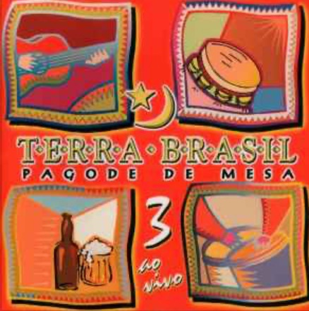

O legado de Edney Fernandes continua vivo, conectando memória, catálogo e novas interpretações.
O catálogo de Edney Fernandes continua ativo no imaginário coletivo, em plataformas digitais, repertórios de intérpretes e no circuito do samba e do pagode.
Entre projetos fonográficos, rodas de samba, estúdio e encontros artísticos, construiu-se uma trajetória viva dentro da música popular brasileira.
Projeto marcante no pagode paulista.

Participação em projeto fonográfico relevante.
Parcerias com artistas do samba e do pagode brasileiro.
Fragmentos íntimos de uma trajetória que continua viva.
Curadoria e organização do legado artístico.